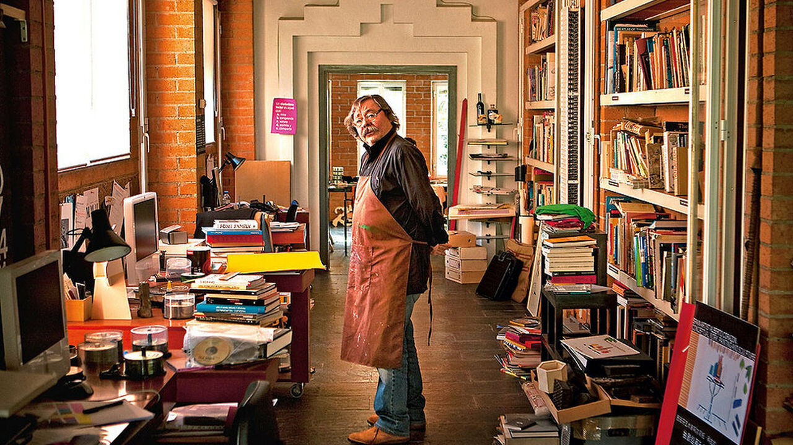
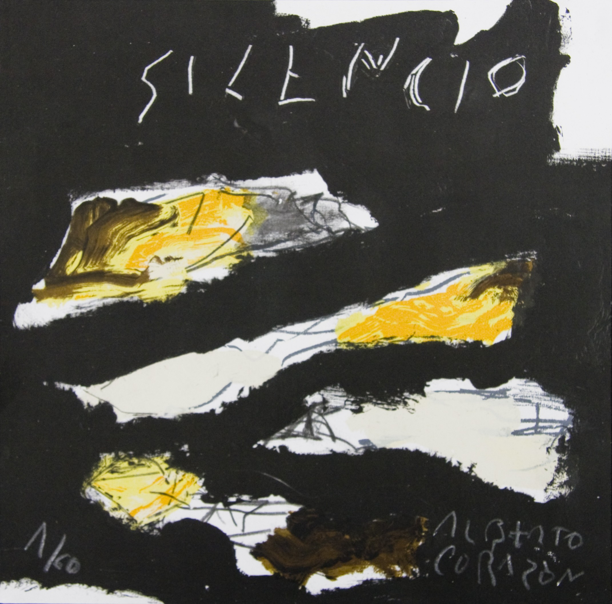

Madrid, 1942 es un diseñador, fotógrafo, escultor y pintor español. Algunos de sus más conocidos diseños representan los logotipos de instituciones y empresas españolas como la Biblioteca Nacional, Casa de América, Ministerio de Sanidad y Consumo, Junta de Andalucía, Universidad Autónoma de Madrid (UAM), Compañía Nacional de Teatro Clásico, ONCE, Paradores, Renfe Cercanías, SGAE, Centro Cultural de la Villa de Madrid, etc. Ha sido fundador y presidente de la Asociación Española de Diseñadores Profesionales. En noviembre de 2006 ingresó en la Real Academia de Bellas Artes de San Fernando con la creación de la disciplina de diseñador en dicha institución.
Nacido en Madrid en 1942, entre 1960 y 1965 cursó en su Universidad estudios de Sociología y Ciencias Económicas mientras, a partir de su interés por el dibujo y la pintura, se iniciaba en el diseño gráfico, un capítulo insólito por no decir inexistente en esos últimos años de la dictadura franquista. En ese periodo crea de forma colectiva la editorial Ciencia Nueva; también presenta sus primeras exposiciones de pintura en Turín y en Milán.

Participa en los primeros pasos del “arte conceptual” que en el inicio de la década de 1970 organizó España la Galería Redor. Hace sus primeras exposiciones en 'espacios alternativos' y continúa mostrando su obra en Europa (Italia y Alemania), y estará presente en la Bienal de Venecia de 1976 junto con Tàpies y el Equipo Crónica. Dos años después fue invitado en la Bienal de París para exponer en el Petit Palais junto con Antonio Saura. Su última aportación al «idea art» tuvo lugar en la Galería Alexander Iolas de Nueva York en 1979 con el proyecto antológico denominado Leer la Imagen.
